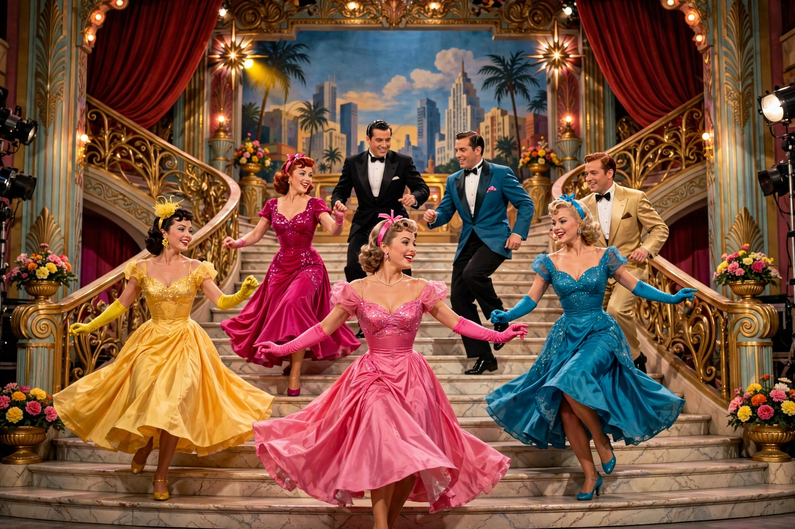

Musical film
Musical film is a film genre in which songs by the characters are interwoven into the narrative, sometimes accompanied by dancing. The songs usually advance the plot or develop the film's characters, but in some cases they serve merely as breaks in the storyline, often as elaborate "production numbers". The musical film was a natural development of the stage musical after the emergence of sound film technology in the late 1920s.

History
The first musical film, The Jazz Singer (1927), starring Al Jolson, marked the beginning of the "talkies" and the end of the silent film era. The 1930s saw the backstage musicals of Busby Berkeley, whose kaleidoscopic choreography in films such as 42nd Street and Gold Diggers of 1933 defined the genre's visual extravagance, and the elegant dance partnership of Fred Astaire and Ginger Rogers at RKO.
The genre's golden age came in the 1940s and 1950s with the MGM Freed Unit, producing Singin' in the Rain (1952), An American in Paris (1951) and Gigi (1958), alongside adaptations of Broadway hits such as Oklahoma!, The Sound of Music (1965) and West Side Story (1961). Big-budget roadshow musicals declined after several expensive failures in the late 1960s, but the genre persisted through rock musicals, animated Disney films such as Beauty and the Beast and The Lion King, Bollywood cinema — where song-and-dance is integral — and 21st-century successes including Moulin Rouge!, Chicago, La La Land and The Greatest Showman.
Types
Scholars distinguish the "integrated musical", in which songs grow out of the drama and express character, from the backstage musical and the revue. Animated musicals and jukebox musicals, which build a story around pre-existing songs, are major sub-forms.